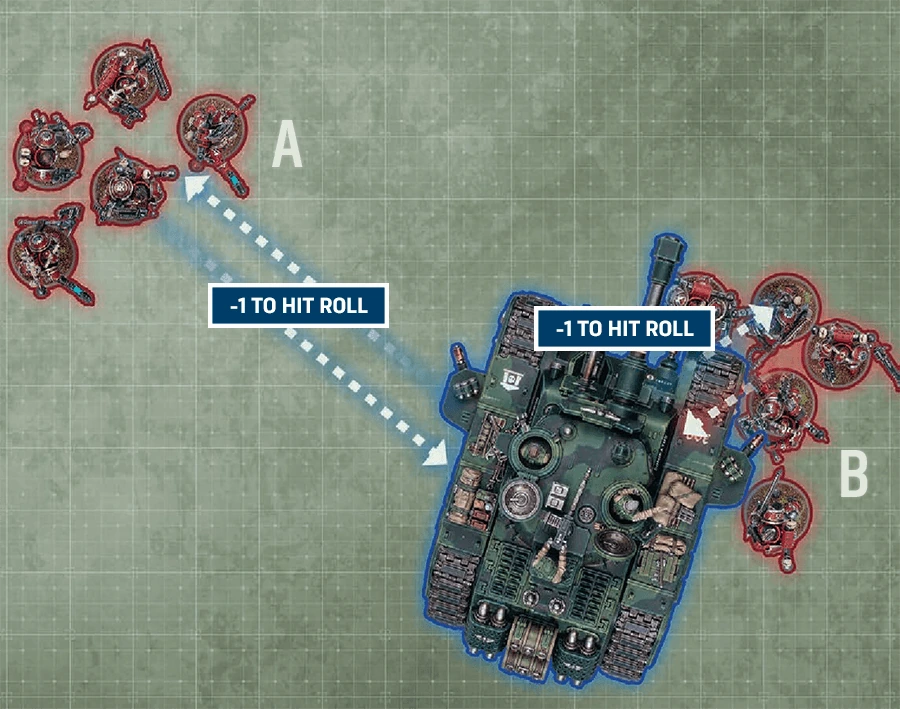

Moving Monsters and Vehicles
Digital 11EEach time you make a normal or with a unit, MONSTER/VEHICLE models in that unit can be moved through friendly and enemy models (excluding other MONSTER/VEHICLE models).
Frames, Big Guns Never Tire and large models.
Each time you make a normal or with a unit, MONSTER/VEHICLE models in that unit can be moved through friendly and enemy models (excluding other MONSTER/VEHICLE models).
Some models do not have a base; many of these are MONSTER/VEHICLE models. Such models have the FRAME keyword, as do some other large models. Whenever a rule refers to a model’s position in relation to anything else on the battlefield (e.g. when ), if that model has the FRAME keyword, unless otherwise stated, measure to and from the closest point on that model (so not necessarily from its base, if it has one).
When rotating a FRAME model as part of a move, if that model does not have a base, turn it any amount around its central axis, while keeping it upright.
In your Shooting phase, enemy MONSTER/VEHICLE units that are engaged can be selected as targets of ranged attacks (excluding attacks made with weapons).
Each time a model makes a ranged attack that targets such a unit, subtract 1 from the (excluding attacks made with weapons by models in a unit engaged with the target).
Errata
Show
- Change to First Sentence
Add the following to the first sentence: ‘(excluding attacks made with [BLAST] weapons)’.

A unit that is engaged with an enemy MONSTER/VEHICLE unit is still not eligible to shoot, and so cannot make ranged attacks against that MONSTER/VEHICLE unit, unless that unit is eligible to shoot while engaged (e.g. because it is using ).